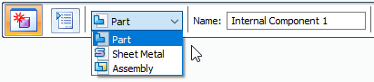
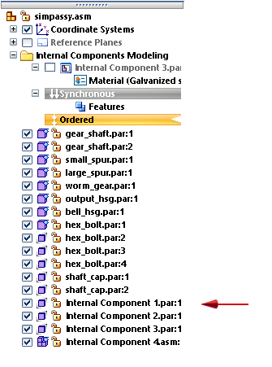
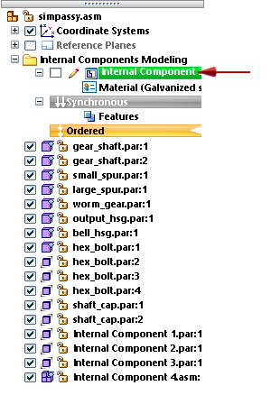
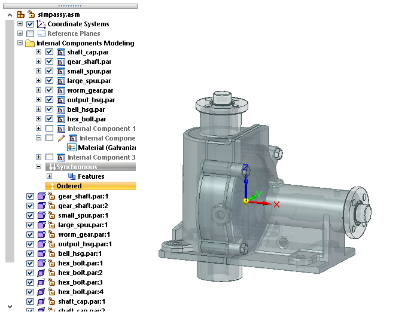

Create an internal component in an assembly
-
Open or create an assembly document.
-
On the ribbon, choose Home tab→Components group→Create Part In-Place list→Create Internal Component
 .
. -
In the Create Internal Component Options dialog box:
-
Check the Ground components box.
-
In the Create In-Place section, select one of the following:
-
To only create an internal component container in PathFinder, click Create component and stay in Assembly.
You may want to select this option when you want to create a series of empty internal components, so that you can add the body features later.
-
To create the internal component and begin adding bodies, click Create component and edit in-place.
-
-
Click OK.
-
-
On the Create Internal Component command bar:
-
From the Component Type list, select the type of internal component to create: Part, Sheet Metal, or Assembly.

-
Type a name for the internal component in the Name box, or use the default name. The number increments automatically for each additional internal component you create using this naming convention.
-
For a part or sheet metal component, assign a material using the Material list.
-
If you chose to create and edit in-place a part or sheet metal internal component, then click the Edit In-Place button
 .
. -
Click Accept
 to create the internal component.
to create the internal component.
Each internal component you create is added to the bottom of PathFinder. To create a series of internal components, repeat the previous steps as needed on the Create Internal Component command bar.

-
-
If you opted to edit in-place a newly created part or sheet metal internal component, you are placed in Internal Component Modeling mode for the internal component activated for edit, as indicated by the pencil icon.

You can now add bodies to it, for example, using the Home tab→Solids group→Add Body command for a part, or using the sheet metal commands for a sheet metal internal component.
New bodies are added or removed from the active internal component. You can use the Activate Internal Component command on the shortcut menu to activate a different internal component for feature editing, without having to exit the assembly.
-
In PathFinder, double-click another internal component to edit it, or right-click and choose Edit.
Every internal component you open for edit in Internal Component Modeling mode is listed above the Ordered or Synchronous environment bar.

-
To exit Internal Component Modeling mode, on the ribbon, click Home tab→Close group→Close Assembly Modeling.
-
To filter the PathFinder display to only focus on the active internal component, you can select the ✔ Show Only Body Features option. For more information, see Activate Internal Component command.
-
To reopen Internal Component Modeling mode for an internal component from the top-level assembly, in Assembly PathFinder, double-click an internal component to edit it, or right-click and choose the Edit command.
How do I
Apply a material to internal componentsPublish internal components
Learn more
Working with internal componentsPublishing internal components
Look up more details
Create Internal Component commandCreate Internal Component Options dialog box
Create Internal Component command bar
Activate Internal Component command
Publish Internal Components command
Publish Internal Components dialog box